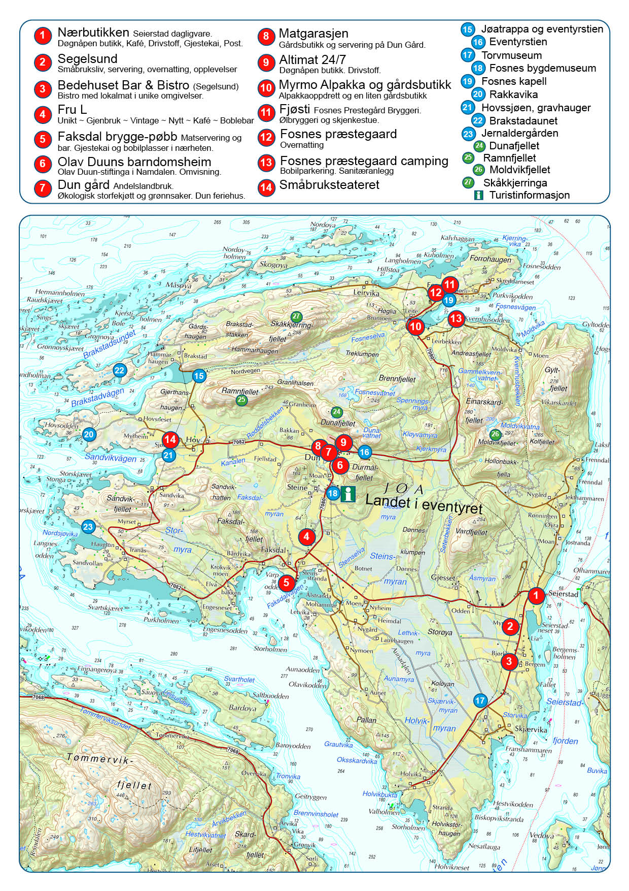

{kind=link}
Praktisk info
Gave
Vi ønsker ingen gave til bryllupet - vi blir glade nok for at dere kommer
Meny
Segelsund har satt sammen en fantastisk 3-retters meny med lokal kortreist mat. Hovedrett vil bestå av rådyr kjøtt som er meget mørt og smaker nydelig, ikke den typiske vilt smaken. Kan anbefales på det varmeste! For dere som ikke ønsker dette kan dem tilby et fantastisk vegetar alternativ.
Dersom det er noen spesielle behov i forhold til allergier ber vi om at dere oppgir det til oss så vil kjøkkenet ta hensyn til det.
Mobilfri vielse
Vi setter kjempestor pris på hvis alle kan la mobiltelefonene/kamera ligge under selve vielsen og nyte det store øyeblikket med oss.
Vi har egen fotograf og bildene vil selvfølgelig bli delt med alle i etterkant :)
Skjønner hvis noen ønsker å ta private bilder, og det skal det selvfølgelig bli mulighet for, vi gir beskjed om det.
På forhånd, tusen takk!

Overnatting
Vi har booket det som er på Jøa og plasserer familier/kjente sammen. Skulle dere ønske å være lengre på øya eller komme tidligere så bare gi beskjed så fikser vi!
Transport
Når det gjelder transport rundt om på øyen under oppholdet så har vi minibuss til rådighet, men vi regner med at flere har med leiebil så vi blir nok nødt til å samordne transport.
Hvorfor Jøa?
Bruden har opphav fra Jøa og vi har tilbrakt alle våre sommere sammen her. Brudgommen ble fort forelsket i den fine naturen, dyrene og ikke minst menneskene på øya. Så når Kim satt seg ned på kne var vi ikke i tvil om sted.
Jøa er en bitteliten øy (~200 beboere) som tilhører Namsos kommune. Det er ikke uten grunn at det kalles "Landet i eventyret" (gjort populært av den kjente dikteren Olav Duun som også er født på øya).
Ikke bare ønsker vi å invitere dere til bryllup, men tilby en flott opplevelse på øyen som kan tilby fine turområder til fots, på sykkel og til vanns.
Dyrelivet er veldig rikt, du vil mest sannsynlig se mange rådyr og elg overalt. På de snaue turene våre har vi også sett rev, hoggorm og sel :)
Har du glemt noe fra butikken har øya norges første selvbetjente døgnåpne butikk (skryt skryt hehe).
Kart
Klikk på kartet for å åpne i ny fane:
{kind=link}